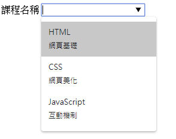
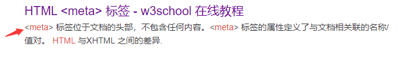

目錄
1. HTML5
- 新的屬性: placeholder,...
- 新的標籤: section,audio,canvas,... (強烈有結構性，語意化)
2. input 新增
3. datalist 標籤
- 讓文字輸入盒使用預先設置好的標籤
- 使用 input 配合 datalist
與 select 差別為，選項內沒有的值可以在 input 中自行填寫
<label> 課程名稱 <input type="text" name="courseName" list="courseList" /> </label> <datalist id="courseList"> <option value="HTML">網頁基礎</option> <option value="CSS">網頁美化</option> <option value="JavaScript">互動機制</option> </datalist>
4. HTML5 新增的標籤
相當於比 div 更語意化的標籤
- article
- section
- header
- footer
- nav
- meter
- progress
- ...
5. nav 標籤
設定導覽列
<nav> <a href="/">HTML</a> <a href="/">CSS</a> <a href="/">JAVASCRIPT</a> </nav>
6. eta 標籤
提供訊息給瀏覽器、搜尋引擎等。一率放在 header 中
- 設定網頁編碼
<meta charset="UTF-8" />- 設定網頁關鍵字(SEO 主要搜尋地方)
<meta name="keywords" content="HTML,CSS,XML,XHTML,Javascript" />- 設定網頁相關描述(主要適用於網頁上的簡短描述，若要優化 SEO 也要對此區塊作處理)
<meta name="description" content="深入淺出網頁設計" />